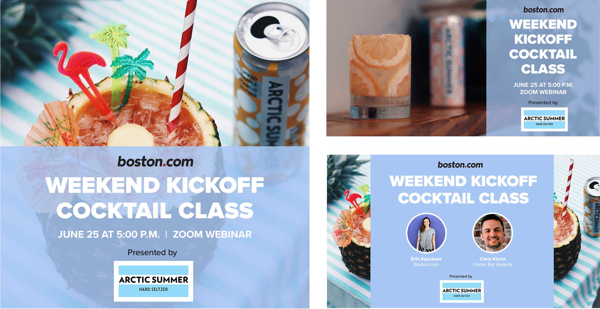

For six months I worked at Boston Globe Media Partners as a Brand Marketing Design Co-op. I worked with a small marketing team to create print, digital, and on-site promotional materials.
To advertise a virtual cocktail class hosted by Boston.com, I made an instagram ad, a facebook ad, and a video slide.

I made ads for GlobeDocs events that were printed in The Boston Globe's newspaper, as well as created weekly GlobeDocs subscriber emails using HTML.

To promote a virtual town hall for Boston students, I made a series of digital ads that appeared on The Boston Globe's website.

I designed a background screen for panelists to sit in front of at a Globe event.

The Boston Globe has a section on its site as well as two newsletters dedicated to cannabis related news stories. I designed a set of stickers promoting these newsletters that were distributed at the Northeast Cannabis Business Conference.
In 2019 my college roommate and I started a company called Rm 29 Designs. Named after the room where we met our freshman year, Rm 29 is a design studio that specializes in covering small business's graphic design and web development needs. I created all materials for Rm 29's brand, including our logo, style guide, business cards, and website illustrations. Much of the work displayed on this portfolio was done for Rm 29 clients.


Search Sustainable is a web application that helps users find everyday products from sustainable sources. I worked with three developers to create Search Sustainable during a weekend-long Hackathon. The goal of this project is to create a helpful tool that directs consumers to better purchasing options. My role as the designer and front end developer was to develop the UX design strategy, then implement it using HTML and CSS.

Users can search for a product name and our app will query our database of carefully selected sustainable items. If we do not have enough results in our database our application will use a web socket to connect to our web crawling API. Our custom crawler will query the products of sustainable vendors and show them as results to the users. These items will also be added to our catalog. Our database will learn from the preferences of our users to improve itself.

If the users find a sustainable item from a source outside of our database they can request to add the product to our site by filling out a request form. Administrators are notified of these requests and can look them over and decide if the product should be added to our database. If so, admins can use the dashboard tools to add it.

If a user finds a product that is not sustainable or otherwise unworthy of being on our site they can report it by pressing the report button in the bottom corner of the product card. The user enters a brief reason for the report and our admins are notified of the possible flawed product. Using the admin tools, our team can choose to remove the product or resolve the report in a manner they see fit.

Our admin user authentication process is powered by Firebase. If an administrator forgets their password they can use the forgot password link. They will get an email with a reset link fitted with a verification token that will allow them to securely reset their password.
Click here for more details on how the web app works
I used Figma and Adobe Creative Suite to research and create the design strategy for our brand. Search Sustainable is a helpful tool for making environmentally-conscious decisions, and so I created a style guide and logo that is clean, modern, and user-friendly.
Aeris is an independent musician who released their debut single "Cottagecore" in March 2021. I illustrated and designed the cover for this single, as well as for their second single "No No No."

For the "No No No" cover, I took a photo of a casette tape, then used photoshop to add Aeris's handwriting and adjust the colors, creating the final cover below.

During the summer of 2021 I worked on a personal project with my great-aunt. Over the course of the past year she had been writing stories about her life and about various members of our family, including my great-grandparents. I took these stories and the many photos that she scanned from family photo albums and designed a book and cover.
Each page is 8 x 10 inches, with a large outer margin to allow space for photo captions. All photos were constrained to the same margins as the text, with the exception of photos beside the chapter titles.
Every chapter title comes with a full bleed photo beside it. The chapter titles, running heads, and captions are set in small caps Mr. Eaves, while the body text is set in 11 pt Corundum with a 14 pt leading.

For the front cover I used a photo of my great aunt and my grandfather as children. For the back cover I used a scan of a page of my great-grandmother's scrapbook, which includes three rough proof photos and a hand written caption.
In the fall of 2021 I designed a campaign to advocate for continuous 24/7 MBTA service as a semester-long class project. The final deliverable was a campaign book, outlining my cause, the campaign's brand, and applications.
 Click here to view the final brand book
Click here to view the final brand book
In the fall of 2021 I was a Project Lead for Scout, Northeastern University's student-led design organization. I managed a team of three designers and one developer to create a new brand and website for The Circuit.
The Circuit (formerly known as Tech for the People) is a student-run editorial and media platform that highlights the multifaceted uses and effects of technology. They came to Scout looking to add relevance and credibility to the organization through a rebrand and website update. User testing of the existing platform revealed that students viewed the organization as a blog rather than a credible editorial or a citable source.
We began the project by conducting research to understand what Tech for the People is and determine what Tech for the People could be. We worked with the client on brand exercises, conducted user interviews on the existing site, and wrote an elevator pitch that summarized the organization.

Once we understood the goals of the rebrand, we started to explore visual identities with moodboarding. Based on client feedback from our moodboards we created a design strategy that outlined the new brand’s typography, color palette, UX components, and imagery to guide us through the remainder of the project.
As part of Tech for the People’s relaunch, the client requested a new name as well as a new logo.Our team and the client agreed that The Circuit was the name that represents the organization the best, referencing both themes of technology and connection.
With a design strategy and logo in place, it was time for us to build a website that represented The Circuit’s brand. We began by writing user stories to help us determine what features the new site needed. Once a list of features was finalized and approved by the client, we created a sitemap that guided us through the designing of lo-fi and eventually hi-fi wireframes.
While a new website was our most prioritized deliverable, the client was also planning for a relaunch of The Circuit’s instagram page and newsletter. We created a new email template using Mailchimp as well as custom Canva templates for instagram posts.
To guide the client through The Circuit’s relaunch, we created a brand book that outlined how to use the new color palette, typography, imagery, and components effectively. Our final deliverables included this brand book as well as a folder of logo files, social media and email templates, and a newly published website.